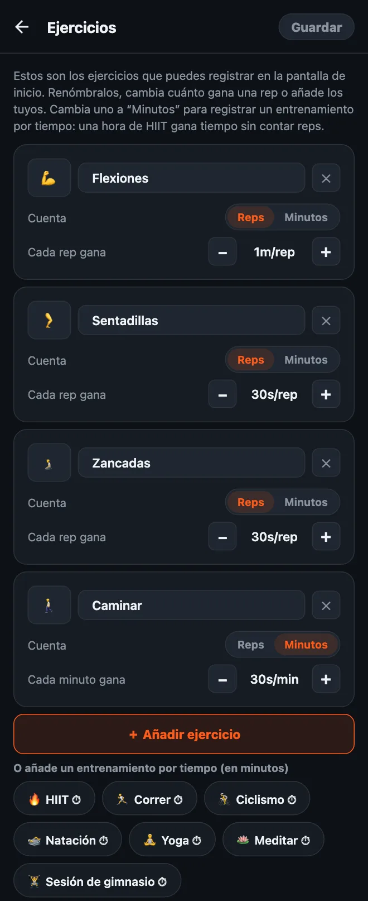

Cómo personalizar tus ejercicios en HonorFit
¡Hola a todos! HonorFit empezó como mi propio bloqueador de apps con flexiones (en inglés): Instagram se queda bloqueado hasta que hago unas flexiones, y las anoto yo mismo con el sistema de honor (sin cámara). Viene con cuatro ejercicios: flexiones, abdominales, dominadas y sentadillas.
Pero no todo el mundo quiere hacer flexiones. A lo mejor tus muñecas las odian, a lo mejor prefieres hacer burpees, o a lo mejor ya corriste 8 kilómetros hoy y quieres que eso cuente. ¡Me parece justo! Por eso puedes cambiarlo todo. Aquí te cuento exactamente cómo, y qué es gratis y qué necesita Pro.
Qué es gratis y qué es Pro
Primero, la buena noticia: desde la versión 1.15.0, casi todo lo de este post es gratis. HonorFit trae cuatro ejercicios de serie con estos valores:
| Ejercicio | Cada rep gana (por defecto) |
|---|---|
| 💪 Flexiones | 1 minuto |
| 🔥 Abdominales | 30 segundos |
| 🧗 Dominadas | 1 minuto 30 segundos |
| 🦵 Sentadillas | 30 segundos |
En la versión gratis puedes renombrar, reordenar y quitar ejercicios, cambiar cuánto gana cada rep, registrar entrenamientos por tiempo en minutos y añadir hasta 3 ejercicios propios. Las ruedas llegan hasta 100 por serie y puedes acumular hasta 2 horas a la vez. El bloqueo, el registro y las estadísticas son gratis para siempre.
Pro cuesta US$3 al mes o US$19,99 en un pago único. Ese es el precio en EE. UU.; cambia según el país y la moneda, y la tienda te muestra el tuyo. En cuanto a ejercicios, te deja añadir todos los propios que quieras. Además quita el tope de 2 horas de tiempo guardado y añade rutinas guardadas, pausa, modo deuda e historial por mes y año.
1. Abre el editor de ejercicios
- En la pantalla principal, toca el engranaje de arriba a la derecha para abrir Ajustes.
- Toca la tarjeta Ejercicios, arriba del todo.
Verás una tarjeta por ejercicio. Nada de lo que hagas aquí se aplica hasta que tocas Guardar arriba a la derecha, así que trastea todo lo que quieras. Si sales sin guardar, no cambia nada.

2. Cambia el nombre de un ejercicio o su emoji
Toca el nombre y escribe lo que quieras. «Flexiones» puede pasar a ser «Flexiones de rodillas» o «Flexiones en pared» si eso es lo que haces de verdad. Para cambiar el icono, toca el cuadrado del emoji a la izquierda y elige uno de la cuadrícula (hay unos 40, casi todos de deporte).
Un detalle: los nombres que vienen de serie siguen el idioma de la app, así que «Sentadillas» aparece como «Squats» si tienes el teléfono en inglés. En cuanto renombras uno, se muestra exactamente lo que escribiste.
3. Decide cuánto tiempo de pantalla gana cada rep
Debajo de cada ejercicio está Cada rep gana, con un botón − y otro +. Cada toque lo mueve 5 segundos, y lo mínimo son 5 segundos. Así que puedes hacer que los burpees valgan 1m30s y los jumping jacks 10s, lo que a ti te parezca justo.
También puedes cambiar solo los valores sin abrir el editor: en Ajustes hay una sección Valor de cada rep justo debajo de la tarjeta Ejercicios, con los mismos botones −/+.
4. Añade un ejercicio
Hay dos formas:
- Toca «＋ Añadir ejercicio». Aparece una tarjeta nueva llamada «Nuevo ejercicio» que vale 30 segundos por rep. Ponle nombre y ajusta el valor.
- Toca una sugerencia. Debajo del botón hay una fila de ejercicios comunes que puedes añadir con un toque: Burpees, Zancadas, Jumping jacks, Plancha, Escaladores, Fondos, Saltar la cuerda, Rodillas arriba, Curl de bíceps, Swings con kettlebell, Sentadilla en pared, Giros rusos, Puentes de glúteos y Ejercicios de Kegel. También empiezan en 30 segundos por rep. Cuando añades uno, desaparece de las sugerencias.
En la versión gratis puedes tener hasta 3 ejercicios propios a la vez (los de serie que renombres no cuentan). Con Pro, sin límite.
Cada ejercicio que tengas tiene su propia rueda en la pantalla principal, así que yo me quedaría en unos cuatro. Con más, acabas haciendo scroll para encontrar el que quieres.
5. Registra entrenamientos por tiempo (minutos en vez de reps)
Esto es lo que más me preguntan. Hay ejercicio que simplemente no va por reps: una caminata, una clase de yoga, salir a correr, una hora en el gimnasio. Cada tarjeta tiene un interruptor Cuenta: Reps | Minutos. Ponlo en Minutos y esa rueda cuenta minutos, y el valor pasa a ser Cada minuto gana.
También hay sugerencias por tiempo de un toque (llevan un ⏱): HIIT, Correr, Ciclismo, Natación, Yoga, Pilates, Meditar, Sesión de gimnasio y Caminar.
Los entrenamientos por tiempo nuevos empiezan en 30 segundos por minuto, así que una hora de HIIT te da 30 minutos de apps. Ojo: cuando cambias un ejercicio entre Reps y Minutos, su valor vuelve a 30 segundos, porque «1 minuto por rep» y «1 minuto por minuto» son tratos muy distintos. Vuelve a ajustarlo después del cambio y listo.
La rueda cuenta minutos enteros, así que una plancha de 30 segundos no encaja bien en Minutos. Para ese tipo de ejercicios estáticos, yo lo dejaría en Reps y decidiría qué significa una rep para ti (por ejemplo, aguantar 20 segundos).
6. Quita uno o empieza de cero
- Toca la ✕ de una tarjeta para quitar ese ejercicio. Siempre tienes que dejar al menos uno.
- Restablecer, abajo del todo, vuelve a poner los cuatro originales con sus valores originales. Como todo lo demás aquí, solo se aplica cuando tocas Guardar.
Cómo elegiría yo los valores
El valor es el precio de tus apps, así que la idea es poner un precio que de verdad vayas a pagar en vez de hacer trampa. Algunos puntos de partida:
- Los ejercicios más duros ganan más. Dominadas y burpees a 1m30s, flexiones a 1m, sentadillas y zancadas a 30s.
- Lo de por tiempo, más o menos a la mitad. 30 segundos por minuto quiere decir que una caminata de 20 minutos te compra 10 minutos de scroll. Si caminar es el hábito que más quieres crear, súbelo a 1 minuto por minuto.
- Si te pillas inflando el número, baja el precio. Esa es mi regla con el sistema de honor. Anotar reps que no hiciste significa que el precio está mal, no que se te dé mal esto.
- El modo difícil (gratis) reduce todos los valores a la mitad con el botón 💀 Difícil de la parte de arriba, por si quieres un día más duro sin editarlo todo.
Si quieres ideas para configuraciones concretas, escribí dos posts más: ejercicios de Kegel y puentes de glúteos para desbloquear tus apps, y ejercicios de bajo impacto para cuando las flexiones no son lo tuyo.
HonorFit Blocker es un bloqueador de apps gratis para iPhone y Android. Sistema de honor, sin cámara, nada sale de tu teléfono. Hasta 3 ejercicios personalizados y los entrenamientos por tiempo son gratis; con Pro, sin límite. No es para todo el mundo, ¡pero ojalá a alguno de ustedes le guste!